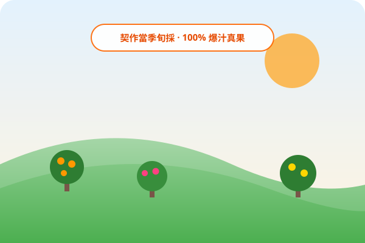
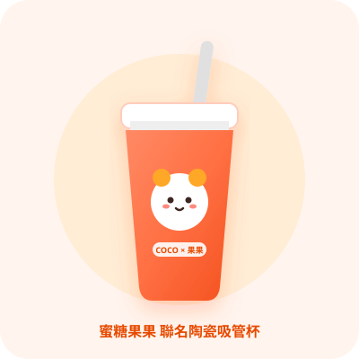
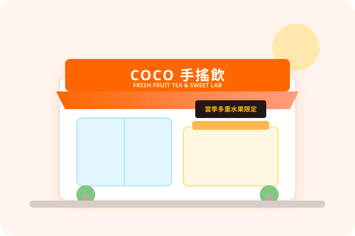

100% 產地旬採真果肉
嚴選台灣在地果農合作契作，無論是屏東尤力克檸檬、枋山愛文芒果還是拉拉山水蜜桃，堅持使用大塊真果肉，絕不添加廉價化學濃縮果露。
專為愛喝甜的消費者特調，從一顆產地鮮果到滿杯果肉嚼感，為你點亮日常最治癒的果香時光。
近年來，市面上充斥著強調無糖或單一茶韻的飲品，然而在 COCO 團隊的心中，手搖飲從來就不僅僅是為了解渴，而是一場讓心情瞬間明亮的「甜蜜嘉年華」。
我們發現許多熱愛果茶與甜食的年輕族群，渴望在每口吸飲中，都能感受到真實水果的鮮酸、濃郁蜜甜與飽滿果肉的咀嚼樂趣。因此，COCO 決心挑戰傳統手搖的配方公式，以「多重水果風格（Multi-Fruit Harmony）」為核心定位，開闢屬於甜茶控的全新天地！
每一杯 COCO 特調，都至少融匯兩種以上互補交織的天然水果，搭配高山產地茶底與特調蜜香，帶給消費者一口驚艷、兩口回甘、滿杯療癒的極致享受。

從果園產地到你手中的每一杯，我們用看得見的真材實料，守護純粹鮮甜。
嚴選台灣在地果農合作契作，無論是屏東尤力克檸檬、枋山愛文芒果還是拉拉山水蜜桃，堅持使用大塊真果肉，絕不添加廉價化學濃縮果露。
經過上千次風味輪盲測測試，精準拿捏果酸（前調）、果香（中調）與蜜甜（尾韻）的黃金交織比例，讓甜度襯托果香，多喝不膩口。
採用先進的食品級瞬間低溫急凍製程，在水果摘採後 4 小時內完成原汁榨取與凍結，封存果汁中豐沛的維生素 C 與最清新的自然芳香。
在 COCO，甜度不是負擔，而是喚醒水果香氣的魔法鑰匙！挑選你的專屬甜度，再加點喜愛的配料吧。
重度甜食控的終極摯愛！天然龍眼蜜香在舌尖大爆發，強烈果香與果酸被溫柔包裹，帶來滿滿的愉悅幸福感。
推薦搭配：爆汁雙響水果茶、蜜桃爆珠果乳
主廚與店長一致推薦的黃金比！果酸與蔗糖完美平衡，既保留了水果鮮明的酸爽生氣，又享有滑順蜜香尾韻。
推薦搭配：蜜糖芒果果昔、蜜香芭樂凍檸
喜愛茶香底蘊多一點的清新首選！茶葉回甘與鮮果純汁相互呼應，微酸微甜，最適合午後提神無負擔享用。
推薦搭配：金芒蜜香烏龍、白桃野莓雙響
慢火小火悶熬 45 分鐘，以純龍眼蜜浸潤，口感軟糯 Q 彈，嚼出甘甜蜜韻。
特製寒天外皮包裹天然果汁，咬下瞬間在齒頰間清脆爆開，驚喜感十足！
切條椰果佐以爽脆果凍粒，雙重咀嚼口感，為果茶增添清脆層次與清甜。
手搖飲是現代年輕人最貼身的心情夥伴。我們與人氣角色「蜜糖果果」攜手，把治癒力量注入日常生活。
「蜜糖果果」是一隻對甜點與熱帶水果愛不釋手的森林小精靈。這次 COCO 與果果創作者共同激盪出聯名企劃，希望讓手搖杯不只是一次性的包裝，更能透過環保、質感與超萌設計，融入大家的書桌、通勤包與辦公室。
從 750ml 陶瓷保溫吸管杯的杯身防沾塗層，到加厚保溫提袋的貼心防傾倒隔層，每一件聯名商品都歷經嚴格選材與設計打樣，為果茶愛好者帶來全方位的甜蜜生活體驗。


走進 COCO 門市，撲鼻而來的是明亮柑橘與高山茶葉的自然芳香。全店以明快的鮮橙暖色搭配溫潤木質調，營造出充滿元氣的輕鬆氛圍。
開放式調理吧台讓每位顧客都能親眼目睹飽滿果肉的分切、現榨果汁的流淌與調飲師充滿節奏感的雪克搖盪。我們用熱情真誠的笑容，將每一杯調配得恰如其分的果茶雙手遞到你手中。